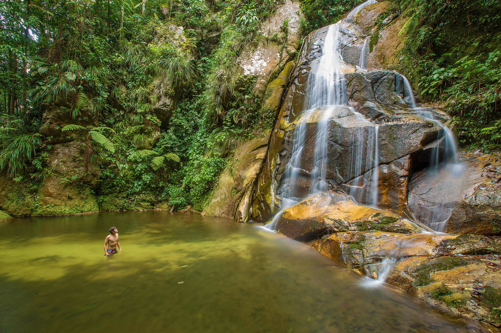
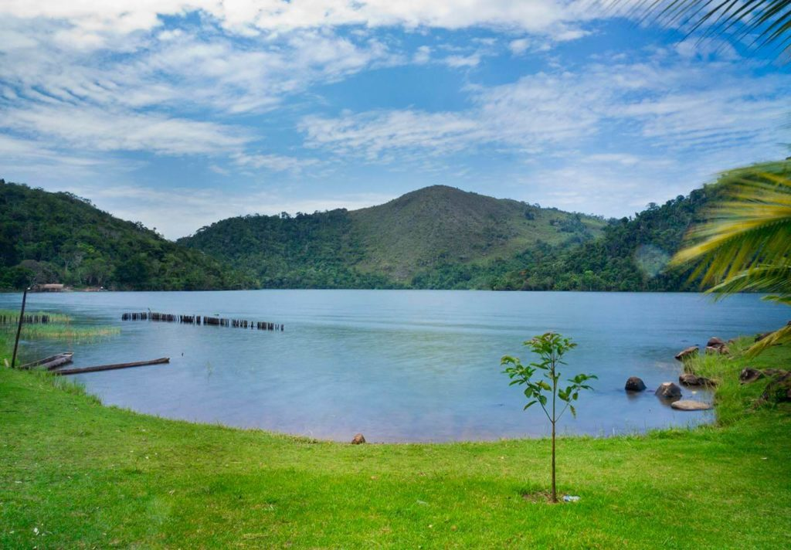
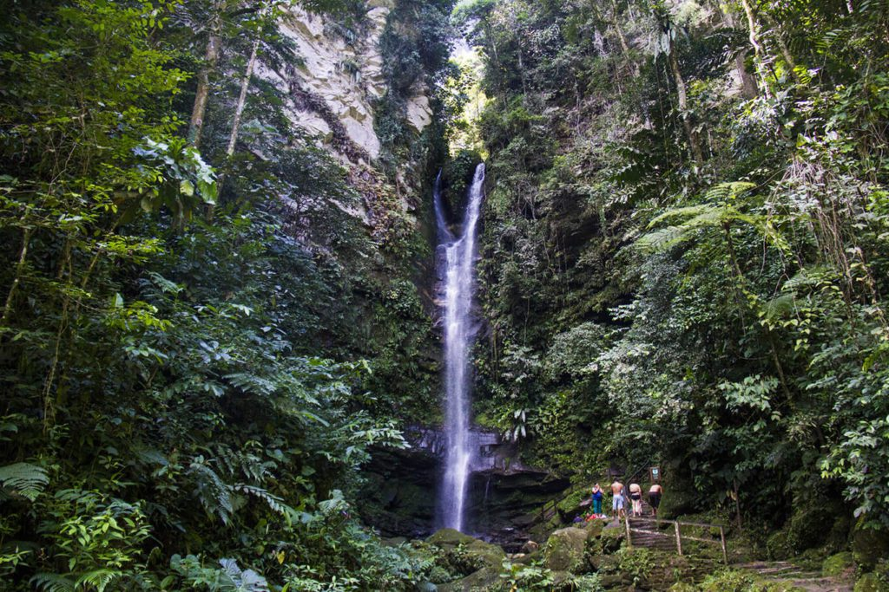
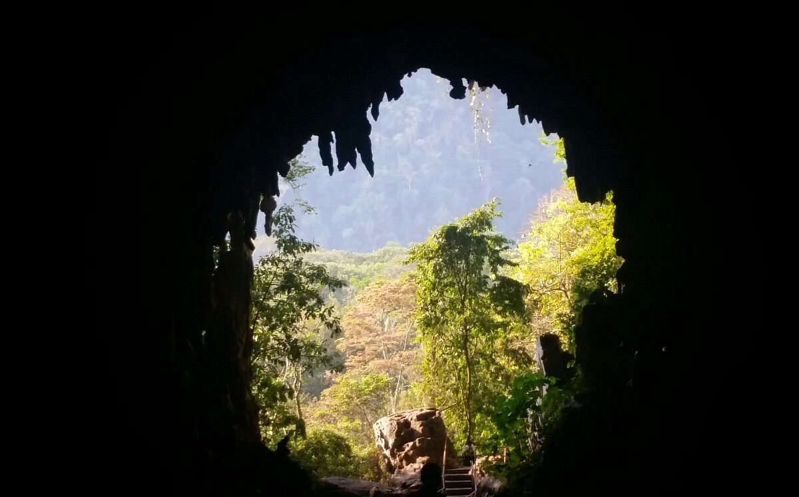
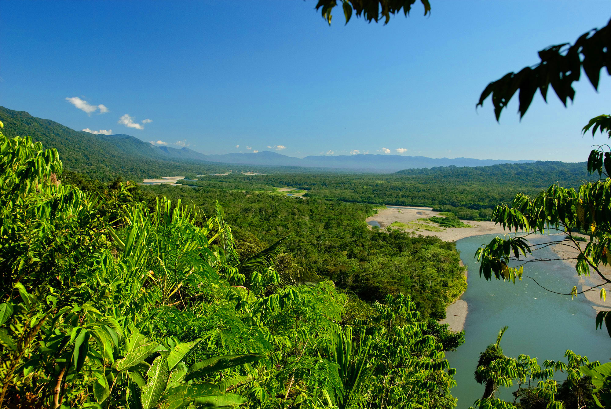

Lugares turísticos
| Lugar | Descripción |
|---|---|
| Tarapoto | Tarapoto, fundada como Santa Cruz de los Motilones de Tarapoto el 20 de agosto de 1782, es una ciudad peruana, capital del distrito homónimo y a la vez de la provincia de San Martín en el departamento de San Martín. Es la más poblada y desarrollada del departamento. Desde aquí, los visitantes pueden explorar la selva amazónica, disfrutar de las cataratas y practicar deportes de aventura como el rafting y la escalada. |
| Laguna Azul | Espejo del cielo de la selva, la Laguna Azul es una de las excursiones más populares de las que se tienen a la mano cerca de Tarapoto. Es un hermoso lago de agua dulce, localizado en la población de Sauce, a unos 54 kilómetros al sur de la capital de San Martín. Como se encuentra adosada a un volcán inactivo, sus aguas mantienen una temperatura de cerca de 20 grados centígrados. Esta laguna de aguas turquesas es un lugar popular para relajarse y nadar. Se encuentra cerca de la ciudad de Tarapoto y es un lugar ideal para pasar el día disfrutando de la naturaleza. |
| Catarata de Ahuashiyacu | En el distrito de Banda de Shilcayo, a pocos minutos de Tarapoto, en el departamento de San Martín se encuentra una espectacular caída de agua de aproximadamente 40 metros de altura. Su nombre proviene del quechua y significa “agua cantarina”. Ubicada cerca de Tarapoto, esta impresionante cascada es una de las atracciones naturales más populares de la región. Los visitantes pueden nadar en las piscinas naturales y disfrutar del entorno exuberante. La catarata de Ahuashiyacu es fuente de vida para tupidos helechos, orquídeas y diversas especies de árboles, y crea un entorno mágico que atrae una gran variedad de mariposas y al famoso gallito de las rocas, considerado ave nacional. Además, es un lugar ideal para practicar buceo o nadar. |
Reserva Nacional Pacaya Samiria |
Aunque se encuentra principalmente en la región de Loreto, parte de esta vasta reserva nacional se extiende hasta el departamento de San Martín. Es uno de los mejores lugares para experimentar la vida silvestre amazónica en su estado natural. |
| Cueva de las Lechuzas | Esta cueva es conocida por las colonias de lechuzas que la habitan. Los visitantes pueden explorar las cámaras subterráneas y observar a estas aves en su hábitat natural. |
| Cordillera Escalera | Partiendo desde la ciudad de Tarapoto, en el departamento de San Martín, esta cordillera ofrece oportunidades para practicar senderismo y observación de aves. También es un lugar importante para la conservación de la biodiversidad en la región. |